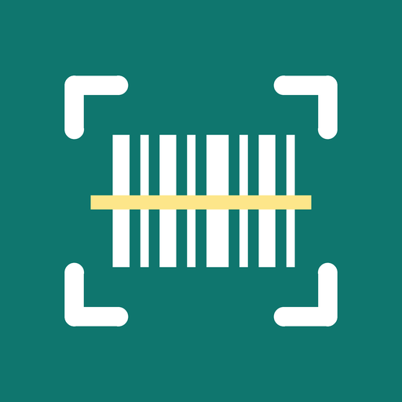

Stok+Google Play'de Stok+ (com.rafbarkod.plus) adıyla yayımlanan Android uygulaması için geçerlidir.
Sayım listeleriniz yalnızca telefonunuzda saklanır. Hesap açmanız gerekmez, bize ait bir sunucuya hiçbir veri gönderilmez. Uygulama içindeki reklamlar ve abonelik ya da tek seferlik satın alma ödemesi Google tarafından yürütülür; bu iki konuda Google'ın topladığı veriler aşağıda anlatılmıştır.
Stok+ bağımsız bir geliştirici tarafından yapılmıştır. Gizlilikle ilgili her konuda yeepylabs@gmail.com adresinden ulaşabilirsiniz.
| Kamera görüntüsü | Barkod ve etiket okumak için kullanılır. Görüntü telefonun içinde, çevrimdışı çalışan Google ML Kit kütüphanesiyle işlenir; hiçbir yere gönderilmez ve kaydedilmez. Fotoğraftan barkod seçme özelliğinde, seçtiğiniz fotoğraf da yalnızca telefonda işlenir. |
|---|---|
| Mikrofon | Yalnızca raf adını ya da adedi sesle söylemek istediğinizde, mikrofon düğmesine bastığınız sürece açılır. Ses, Android'in kendi ses tanıma hizmetine (çoğu telefonda Google) iletilip yazıya çevrilir; bu aktarım Google'ın gizlilik politikasına tabidir. Uygulama ses kaydı tutmaz. |
| Sayım verileri | Liste adları, barkodlar, parça adları, adetler ve raf/koridor/kat bilgisi telefonun kendi veritabanında tutulur. Dışa aktardığınız Excel dosyasının nereye gideceğine (paylaşma, kaydetme) yalnızca siz karar verirsiniz. |
| Satın alma durumu | “Abone mi, ömür boyu satın alındı mı, ödüllü reklam hakkı ne zamana kadar geçerli” bilgisi telefonda saklanır. |
| Dil seçimi | Seçtiğiniz uygulama dili telefonda saklanır. |
Uygulama konum bilgisi, rehber, dosya listesi ya da kişisel kimlik bilgisi toplamaz; analiz (analytics) ve çökme raporlama kütüphanesi içermez.
Ücretsiz kullanımda uygulama üç türde reklam gösterir: liste ekranlarının altında küçük bir banner, tarama bittikten sonra arada bir (en fazla birkaç dakikada bir) tam ekran reklam ve kaydedilmiş bir listeyi dışa aktarırken ya da fotoğraftan barkod eklerken isteğe bağlı ödüllü reklam. Tarama sırasında reklam gösterilmez. Reklamlar Google AdMob tarafından gösterilir. AdMob bu sırada reklam kimliği (Advertising ID), IP adresinden çıkarılan yaklaşık konum, cihaz ve uygulama bilgileri, uygulama etkileşimleri ve tanılama verileri gibi verileri reklamı göstermek, ölçmek, analiz etmek ve kötüye kullanımı engellemek için işleyebilir. Ayrıntılar: Google Reklam Gizliliği ve AdMob veri açıklamaları.
Avrupa Ekonomik Alanı, Birleşik Krallık ve İsviçre'deki kullanıcılara, reklam SDK'sı başlatılmadan önce Google'ın onay ekranı (User Messaging Platform) gösterilir; kişiselleştirilmiş reklam tercihinizi oradan, ayrıca uygulamadaki Stok+ sayfasında çıkan “Reklam tercihleri” düğmesinden istediğiniz zaman değiştirebilirsiniz. Her telefonda reklam kimliğini Ayarlar › Google › Reklamlar bölümünden sıfırlayabilir ya da silebilirsiniz. Stok+ satın alan kullanıcılara hiçbir reklam gösterilmez.
Aylık ve yıllık abonelik ile tek seferlik “Ömür boyu” seçeneği Google Play Faturalandırma ile satılır. Ödeme tamamen Google Play üzerinde gerçekleşir; kart bilgileriniz, adınız ve fatura bilgileriniz uygulamaya hiç ulaşmaz ve geliştirici tarafından görülmez. Google'ın bu sırada işlediği veriler Google Gizlilik Politikası kapsamındadır. Aboneliğinizi Play Store › Abonelikler bölümünden dilediğiniz zaman iptal edebilirsiniz; ömür boyu satın alma yenilenmez.
Geliştirici hiçbir veriyi satmaz, kiralamaz ya da üçüncü kişilere aktarmaz. Yukarıda sayılan üç hizmet dışında veri alan kimse yoktur: Google AdMob (reklam), Google Play (ödeme) ve telefonunuzun ses tanıma hizmeti.
Tüm sayım verileri telefonunuzda durur. Uygulamayı kaldırdığınızda ya da Ayarlar › Uygulamalar › Stok+ › Depolama › Verileri temizle dediğinizde bu veriler silinir. Bizde saklanan bir kopyası olmadığı için ayrıca bir silme talebi göndermenize gerek yoktur.
Uygulama depo ve mağaza çalışanlarına yöneliktir; 13 yaşın altındaki çocuklara yönelik değildir ve onlardan bilerek veri toplamaz.
KVKK ve GDPR kapsamında verilerinize erişme, düzeltme ve silme haklarınız vardır. Uygulama verilerinizi telefonunuzda tuttuğu için bu hakları doğrudan cihazınız üzerinden kullanabilirsiniz; yine de her türlü soru için yukarıdaki e-posta adresine yazabilirsiniz.
Bu politika değişirse bu sayfa güncellenir ve yukarıdaki “son güncelleme” tarihi değiştirilir. Önemli değişiklikler uygulama mağaza sayfasında da duyurulur.
← Stok+